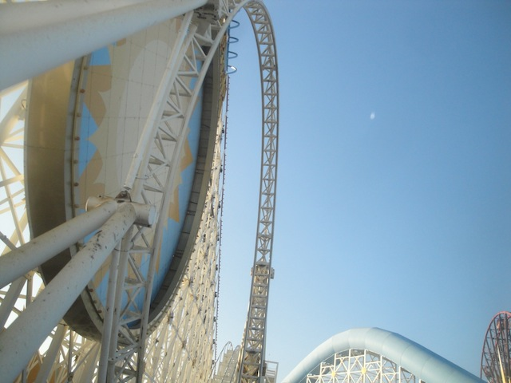

| |
Disneyland Xmas 2014
All right. Its time for another visit to the Disneyland Resort. Now, it's been a year since we've last visited, so sure enough, it was time to go again.
And yeah. It was crowded today. REALLY CROWDED!!!
"I knew that Disneyland food prices are bad, but I didn't think I'd have to sell my ducklings into slavery to pay for this popcorn."
 Grr. Not pleased that only one side of the Matterhorn is running today. But hey, at least it wasn't Disneyland's fault.
Grr. Not pleased that only one side of the Matterhorn is running today. But hey, at least it wasn't Disneyland's fault.
I've heard a lot of good things about Big Hero 6. I'll have to check that out sometime.
"I'll get you my pretty! And your little credit too!"
 All right. It's been over a year since I've ridden Big Thunder Mtn since the last times I was at Disneyland, it was closed for a makeover. So it'll be fun to see if they did anything different.
All right. It's been over a year since I've ridden Big Thunder Mtn since the last times I was at Disneyland, it was closed for a makeover. So it'll be fun to see if they did anything different.
 For the most part, it was exactly the same, but I really enjoyed the improved effects on the 3rd Lifthill.
For the most part, it was exactly the same, but I really enjoyed the improved effects on the 3rd Lifthill.
 Now I have had a few people say that Thunder Mtn after this makeover counts as a new credit because they replaced all the track. Sorry, but that is just about as desperate for gaining credits as I can possibly imagine. I know a lot of people claim the same thing for Space Mountain when it had its makeover. But...no. Track gets replaced all the time. Over time, a ride that's been around for 40 years will have completely new track different from that when it first opened. That doesn't make it a new credit, and neither does some new lifthill effects. Seriously, the people counting this as a new credit are on the same level as those who count that Peter Pan style ride @ Linnemaki as a credit.
Now I have had a few people say that Thunder Mtn after this makeover counts as a new credit because they replaced all the track. Sorry, but that is just about as desperate for gaining credits as I can possibly imagine. I know a lot of people claim the same thing for Space Mountain when it had its makeover. But...no. Track gets replaced all the time. Over time, a ride that's been around for 40 years will have completely new track different from that when it first opened. That doesn't make it a new credit, and neither does some new lifthill effects. Seriously, the people counting this as a new credit are on the same level as those who count that Peter Pan style ride @ Linnemaki as a credit.
 "What!? I thought I was supposed to get rid of this dynamite during the makeover!! I don't wanna--"
"What!? I thought I was supposed to get rid of this dynamite during the makeover!! I don't wanna--"
Oh, and in case you haven't been paying attention for the past year, Frozen has essentially taken over the world. And I mean TAKEN OVER THE FREAKING WORLD!!!
Look, I've seen Frozen, and I liked it. It's a good Disney movie. It's very well made and I hope Disney continues with their 21st Century Disney Rennisance, but GOD DAMMIT!! I am SICK of Frozen. I like it, but it's not one of my favorites from Disney. Hell, even if it was my favorite Disney film, I'd still get sick of it by this point. The movie has become at this point, just this marketing monster that just screams "I AM A CASH COW!!!". The only reason I have any tolerance for the tsunami of Frozen that took over 2014 is because I love Disney, Frozen was a good movie, and I'd much rather have more Frozen and 21st Century Disney stuff being popular instead of some of the other insanely popular stuff that I loathe with a passion and makes me want to vomit inside my own mouth. Maybe in a couple years, I'll be happy to see Frozen stuff after I take a long break (I remember back in Middle School, a certain teacher played The Emporer's New Groove EVERY DAY and it wasn't until after High School that I could see the movie without being sick of it, and I love that movie), I'll be happy to see Frozen stuff. But as of right now, you guys just need to let it go. No wait!! I didn't mean that!! I meant to say...DAMMIT!! DAMMIT!! DAMMIT!! DAMMIT!! DAMMIT!! DAMMIT!!
This thing may not be amazing like the Florida Tower, but I still love all the airtime.
Don't even think about getting into Carsland today.
You see this insane line, that's the Single Riders Line for California Screamin. Yeah, that's how bad it was today. Normally, the Single Riders Line is a saving grace. But nope! Not today!
Notice anything in this picture? Yep, there's an empty seat that went out. And here's a single riders line that's over an hour long. And sadly, there a few more that went out. Yeah, I really hate to say this, but the California Screamin operations were pretty poor today. Ok, let me rephrase that. They were bad by Disney Standards. I know that if I judged all park's operations the same and used the same standard for Disneyland that I do for parks like Six Flags Magic Mountain and Knotts Berry Farm, then these are still really good operations. But...I don't. I hold the Disney Parks, the Universal Parks, and Europa Park to a higher standard. I expect A+, phenomenal, the absolute top quality in operations. And these were not of that standard. I know everyone has an off day and that sh*t happens, so I can forgive, just...work on it please.
 Hey, at least California Screamin is running really good as usual.
Hey, at least California Screamin is running really good as usual.

Anybody notice anything wrong with this picture? I didn't think so. Now I'd to tell a certain group of people to kindly shut up please. Thank you. =)
 "Gah! I'm suffering from Fullitis!! Somebody help me!"
"Gah! I'm suffering from Fullitis!! Somebody help me!"
And of course, we have our ride on Haunted Mansion Holiday since its that time of year.
"Hey, the body may die, but the celebration lives on forever."
Ooh. Look at the pretty colors.
And of course, we end this visit with a dinner stop at Wetzels Pretzals as another fun visit to the Disneyland Resort comes to a close.
Home
|
{kind=link}